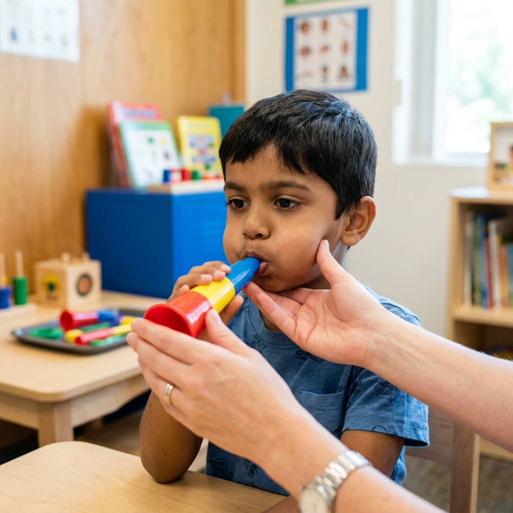

Oral Placement Therapy (OPT), developed by Sara Rosenfeld-Johnson through the TalkTools approach, is a tactile-proprioceptive method that targets the specific muscle movements needed for clear speech production. Unlike traditional articulation therapy that works primarily on auditory and visual cues, OPT directly trains the lips, tongue, and jaw through structured physical exercises.
What Is Oral Placement Therapy?
OPT is a speech therapy approach that uses specialised tools and exercises to build the oral-motor skills required for accurate speech sound production. It recognises that some children understand what sounds they need to make — they can hear the difference between correct and incorrect sounds — but their oral muscles lack the strength, coordination, or range of movement to produce them accurately.
The approach targets three key areas of the speech mechanism:
- Jaw stability and grading — the ability to open and close the jaw to precise positions for different sounds
- Lip rounding and retraction — the lip movements needed for sounds like /w/, /oo/, /p/, /b/, /m/
- Tongue tip elevation and lateralisation — the tongue movements required for sounds like /t/, /d/, /l/, /s/, /r/
How Does TalkTools OPT Work?
The TalkTools approach uses a structured hierarchy of exercises. Each exercise is designed to build on the previous one, gradually increasing the complexity and precision of muscle movements.
Blowing Exercises
Blowing activities are used to develop lip rounding, breath control, and jaw stability. The TalkTools hierarchy uses a progression of horns (numbered 1–8) that require increasing levels of lip strength and air pressure:
- Horn 1 — requires minimal effort; builds awareness of airflow and lip closure
- Horns 2–4 — increase resistance, building lip rounding strength
- Horns 5–8 — require significant lip strength and sustained airflow, building the motor patterns needed for later speech sounds
Drinking Exercises (Straw Hierarchy)
The TalkTools straw hierarchy trains lip closure, cheek tension, and tongue retraction — all critical for speech clarity:
- Bear straws (thick) — used first, requiring minimal suction
- Honey Bear straws (medium) — increase suction demand
- Lip Blok straws (thin) — require precise lip closure and strong suction, building the lip tension needed for bilabial sounds (/p/, /b/, /m/)
Jaw Exercises
Jaw grading is essential for clear vowel production and smooth transitions between sounds. TalkTools uses bite blocks of graduated sizes to teach the jaw to:
- Open to specific, controlled positions
- Maintain stability during speech movements
- Move independently from the tongue (jaw-tongue dissociation)
Who Benefits from OPT?
Oral Placement Therapy is particularly effective for children with:
- Childhood Apraxia of Speech (CAS) — where the brain has difficulty coordinating the muscle movements needed for speech
- Down syndrome — often associated with low muscle tone in the oral-facial region
- Autism spectrum disorder — particularly children with limited verbal output
- Articulation disorders — where specific sounds are consistently distorted or substituted
- Low oral-motor tone — children who drool excessively, have an open mouth posture, or struggle with feeding
What Can Parents Do at Home?
While OPT should always be guided by a trained therapist, there are several ways parents can support their child's oral-motor development at home:
| Activity | What It Builds |
|---|---|
| Blowing bubbles | Lip rounding, sustained airflow, breath control. Start with large wands and progress to smaller ones. |
| Drinking through straws | Lip closure, cheek strength, tongue retraction. Gradually use thinner straws and thicker liquids (smoothies). |
| Blowing party horns | Sustained lip rounding and breath control. The unrolling horn provides visual feedback of effort. |
| Crunchy foods | Jaw strength and grading. Encourage chewing on both sides. Carrots, crackers, and apple slices are good options. |
| Silly face games | Lip and tongue range of motion. Make exaggerated faces in the mirror — big smiles, fish lips, tongue out, tongue to nose. |
Note: These home activities are supportive exercises, not replacements for professional therapy. OPT requires a trained therapist to assess your child's specific oral-motor needs and prescribe the appropriate hierarchy of exercises. At Rapture Therapy Centre, our therapists are certified in TalkTools OPT protocols.
Why Choose Rapture for OPT?
At Rapture Therapy Centre in Rajarajeshwari Nagar, Bangalore, our speech-language pathologists are trained in the TalkTools Oral Placement Therapy approach. We conduct thorough oral-motor assessments to determine the specific muscle weaknesses affecting your child's speech, and design individualised OPT programs that complement traditional speech therapy techniques.
Is OPT Right for Your Child?
Our TalkTools-certified therapists can assess your child's oral-motor skills and determine whether Oral Placement Therapy would benefit their speech development.
Book an Assessment